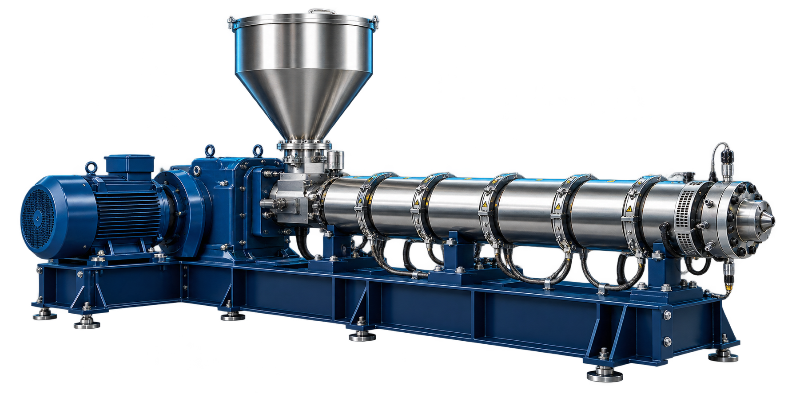

INDUSTRIAL WORKSPACE / Dashboard
SANDBOXJD
Jamie DavisWorkspace admin
MONITOR · SIMULATE · OPTIMIZE
Industrial Machine Simulator
Real-time machine simulation for research and development.
Connected fleet 4 machines
1 Hz · Live synthetic telemetry
◈
Extruder EX-001 – Live digital twin
Live sensor overlay · illustrative machine model

Process temperature— °C
Drive vibration— mm/s
SENSOR STREAM CONNECTEDILLUSTRATIVE MODEL · SYNTHETIC TELEMETRY
Machine health
SELECTED MACHINE100Good
Normal4
Attention0
Connected4
Illustrative health derived from synthetic readings
Activity & alerts
Live telemetry ● STREAMING
Last 60 simulation seconds
Temperature (°C)
Current—
Temperature
−60s−45s−30s−15sNow
Pressure (bar)
Current—
Selected machine 1 Hz
−60s−45s−30s−15sNow
Vibration (mm/s)
Current—
Selected machine 1 Hz
−60s−45s−30s−15sNow
All systems simulated. No physical machines connected.SIAS HUB / INDUSTRIAL RESEARCH WORKSPACE